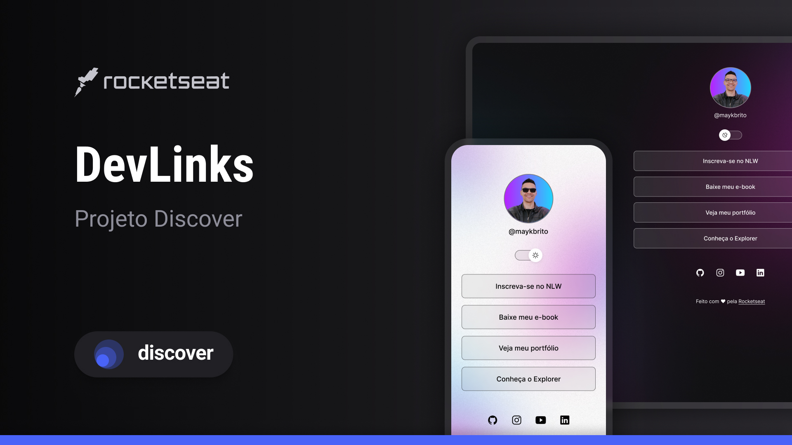
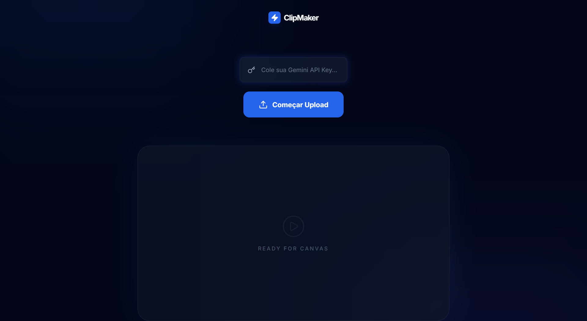
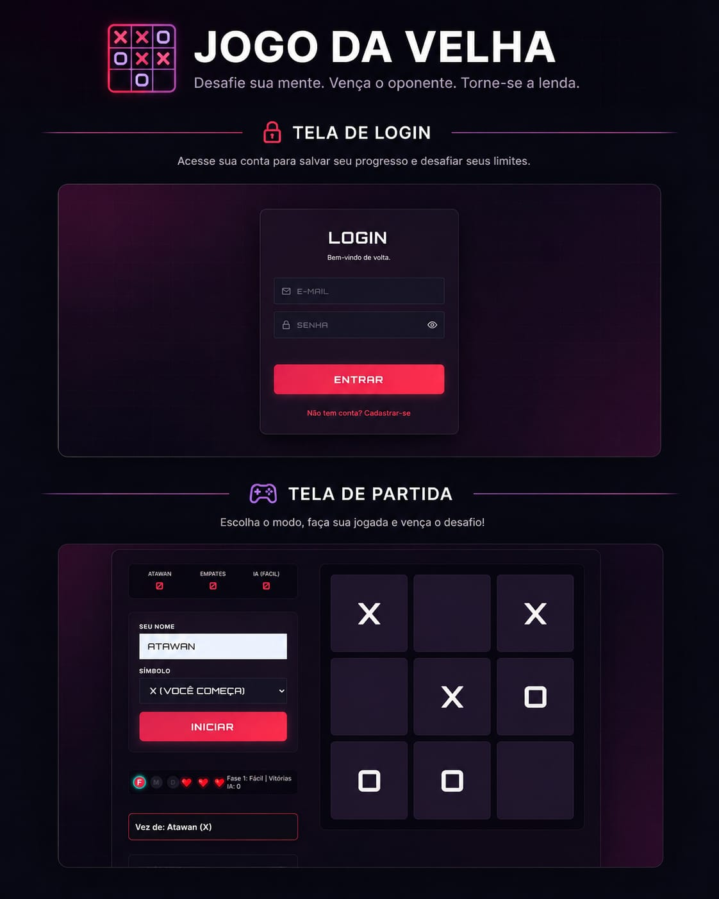
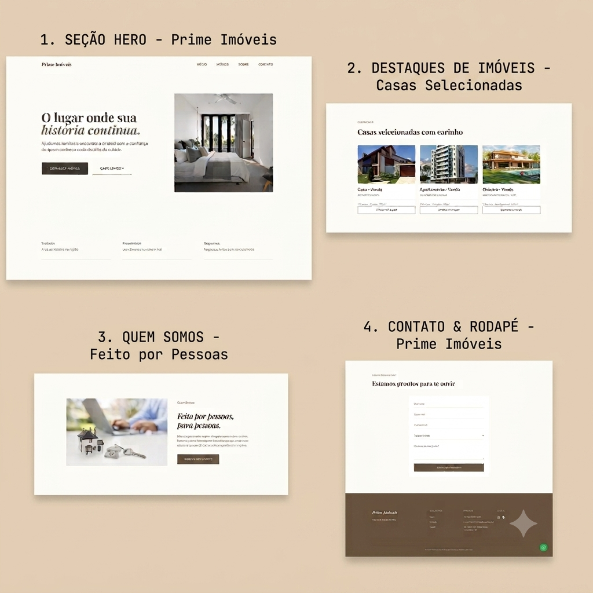
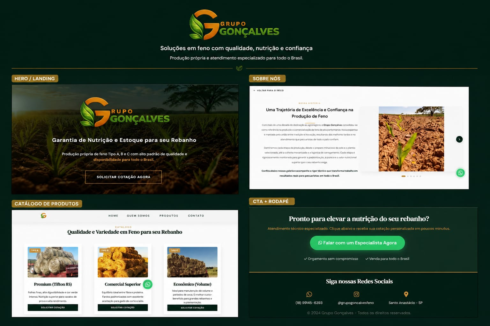
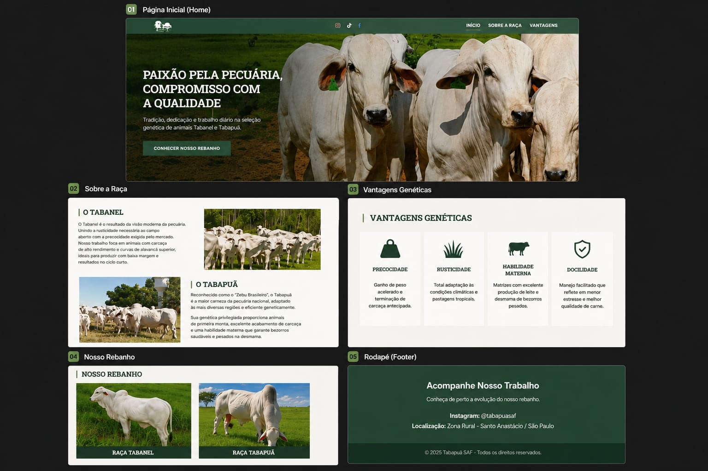

Minha trajetória na tecnologia começou na área de redes, onde me formei e atuo como suporte técnico em um provedor de internet. No dia a dia, lido com infraestrutura, diagnóstico de problemas, atendimento a clientes e análise de redes — o que me deu uma base sólida em lógica, resolução de problemas e pensamento técnico.
Com o tempo, comecei a ir além do suporte e me interessei cada vez mais por desenvolvimento. Percebi que não queria apenas resolver problemas existentes, mas também criar soluções. Foi aí que iniciei minha transição para a programação.
Hoje, estou direcionando minha carreira para o desenvolvimento, aplicando na prática a mesma mentalidade analítica que já utilizo em redes. Tenho evoluído na construção de projetos, buscando escrever códigos organizados, funcionais e com foco em soluções reais.
A experiência com redes me trouxe uma visão diferenciada, principalmente em como sistemas funcionam na prática, o que impacta diretamente na forma como desenvolvo. Estou em constante evolução, unindo minha base técnica com programação para construir uma carreira sólida como desenvolvedor.
Sites Feitos
Certificados
Projetos Feitos
Anos de Experiência Prática

Agregador de links para cartão de visitas online, com interface moderna e responsiva.

Web experimental com IA para identificar e cortar momentos virais em vídeos automaticamente.

Um jogo clássico da velha implementado em HTML, CSS e JavaScript.

Uma landing page para uma imobiliária, com interface moderna e responsiva.

Uma landing page para apresentar a empresa e facilitar a comercialização de feno de alta performance.

Uma landing page institucional focada na divulgação e detalhes das raças de gado Tabanel e Tabapuã.
Desenvolvimento de sites e landing pages personalizados para destacar sua marca e atrair clientes.
Atualização de conteúdos, melhorias de performance e pequenas implementações de funcionalidades.
Melhore a velocidade e a performance do seu site com otimizações técnicas, garantindo uma navegação rápida e eficiente.
Entre em contato comigo através das opções abaixo: